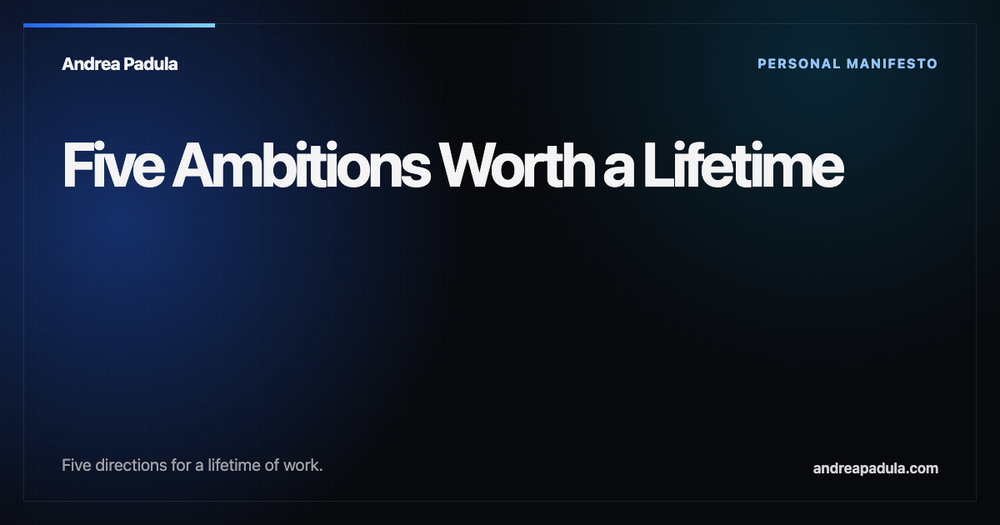

A lifetime needs a horizon larger than a career.
Five ambitious directions for the work I want to support—and a discipline for turning each one into questions that can be tested now.
More healthy time. Economic freedom. Interstellar reach. Deeper self-knowledge. Energy abundance.
Five ambitions, one system.
Each horizon expands a different dimension of human possibility. Progress in one changes what becomes possible in the others.
-
Time
Increase healthy human longevity.
Add capable years to life—not simply years—and make the benefits broadly accessible.
-
Agency
Make extreme poverty preventable, not inherited.
Build economic floors and the health, learning, infrastructure, and ownership that let people shape their own lives.
-
Horizon
Make interstellar travel possible.
Advance the propulsion, energy, materials, autonomy, and robotics from which interstellar capability could one day emerge.
-
Judgment
Deepen self-awareness.
Help people and institutions see motives, blind spots, confidence, and consequences more clearly.
-
Capacity
Create abundant clean energy for everyone.
Make energy so clean, reliable, affordable, and available that scarcity stops constraining human potential.
Ambition becomes credible when it can be tested.
A long horizon is useful only when it changes what we study, build, fund, and measure today.
- DirectionName the horizon without pretending to know the final path.
- QuestionTranslate it into something measurable.
- ExperimentBegin with the smallest honest test.
- EvidencePublish results, including failure and revision.
- InstitutionBuild continuity only when the work earns it.

The founding essay
Five Ambitions Worth a Lifetime
The full manifesto explores what reaching for each goal could mean, where AI, robotics, and quantum technologies may help, and why ridicule is never a substitute for evidence.
Read the full essayBuild toward the horizon
If one of these ambitions is part of your work, let’s compare maps.
I welcome serious conversations with researchers, builders, institutions, and funders working on the underlying problems.
Start a conversation